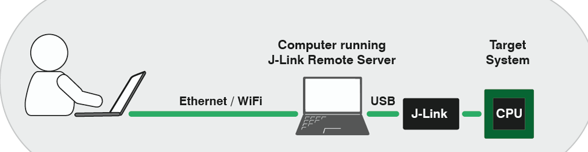
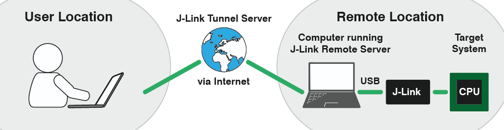
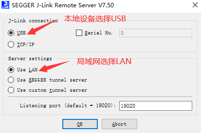
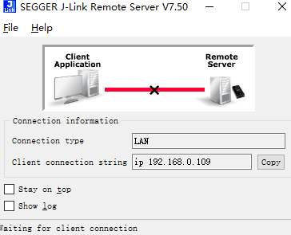
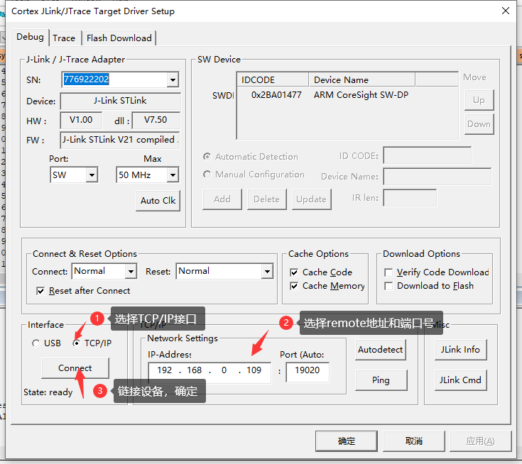
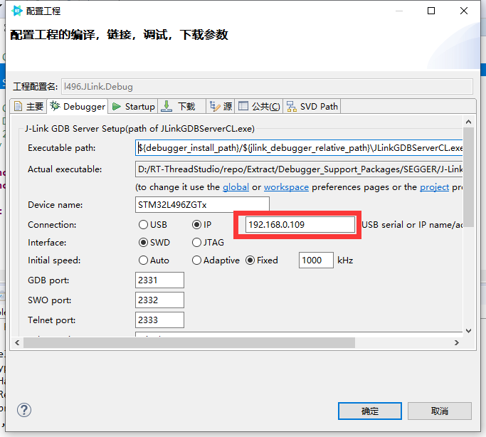

KEIL远程调试JLINK设备
设备在公司，回家要带来带去比较麻烦怎么办？
如果想要测试某个开发板，手边没有开发板，但是朋友那边有，但是又不想打扰朋友使用电脑怎么办呢？
相信大家可能会说，用qemu等来仿真模拟，但是仿真模拟存在一定的缺陷，有些硬件可能无法模拟，这个时候想借朋友的板子测一下，怎么办呢？
这篇文章教大家如何远程调试JLINK 开发板。
首先你需要有JLINK+ 一款MCU，如果手上有ST-LINK或者NUCLEO板子，也可以把ST-LINK转成JLINK来测试使用（效果和JLINK一模一样）
原理讲解
根据官网，我们先看下下面这张图，大概意思就是如果采用局域网的方式，两台笔记本需要在同一个局域网内（就是IP可以相互访问）

另外一种方式是隧道方式，这种主要是由于没有公网IP，采用JLINK服务器隧道的方式进行相互链接，不过这种方式我发现有个缺点，就是remote IP地址未知，不能准确知道IP地址，就不能很完美的使用KEIL，只能用JLINK命令行。

环境搭建
首先你需要有两台电脑，确保两台电脑可以相互ping通和建立TCP/IP链接，这个时候就要把两边的防火墙关掉了，确保可以相互ping通和网络环境可以相互建立链接，这个可以百度看下如何关闭WIN10防火墙。
remote 机器
我们可以先在局域网里面两台计算机测试，假设remote 计算机IP地址是192.168.0.109。
这边需要remote机器上安装jlink software 官方软件，然后执行exe J-Link Remote Server
选择如下配置，端口号要记住19020

点击OK之后你可以看到

我们只要记住IP地址192.168.0.109 还有端口号19020即可。这个时候remote端就已经设置好了。
local端
local端就是我们的自己家里使用的PC，这个时候我们就像平时开发STM32一样，我们打开KEIL。配置很简单
如下图所示：

然后我们就可以像开发板在本地一样，进行开发自己的开发板。
测试
程序烧完之后，会发现，我们通常用的串口无法远程过来，那怎么办呢？
这个时候，我们就可以用SEGGER 自带的工具RTT来使用finsh或者等其他的打印方式来进行一个交互和log打印。
这边推荐软件包SEGGER_TOOL https://github.com/supperthomas/RTTHREAD_SEGGER_TOOL
SWO也是可以进行调试的
如果你对jlink命令行的方式比较熟悉的话。也可以用命令行进行烧入和调试，这边我摘抄一些command常用命令
usb--------连接目标板
r----------重启目标板
halt-------停止cpu运行的程序
loadbin----加载可执行的二进制文件
g----------跳到代码段地址执行
s----------单步执行（调试用）
setpc-----设置pc寄存器的值（调试用）
setbp-----设置断点
Regs-------读寄存器组织，该命令会把所有的寄存器显示出来
wreg-------写寄存器
mem--------读内存
w4---------写内存
power off mmu---关闭mmu，这个对于裸板调试很重要
w4 cpsr,0x0000001f------切换到系统模式
speed------设置jtag的传输速率
rce 0,c0,c0,0-----设置cp15寄存器的第1个寄存器为0
如果想要reset开发板，可以用命令r + g 来实现重启加载命令
总结
上面的实验是基于局域网的方式，其实局域网只能很小的范围，所以如果想真正实现远程办公的话，还需要内网穿刺的方式将remote机器使用固定公网IP地址。具体如何内网穿刺可以自行百度frp等方式。这边我就不做过多介绍。不过这种方式如果能够实现，对于一些自动化集成测试，或者设备共享，有一些参考。无用的小知识，增加一点点，简单玩了玩。
像IAR, SEGGER STUDIO, RT-STUDIO, IAR, eclipse等编译器都可以根据相同的原理实现。
不过这种方式如果remote设备比较多的话，就只能根据JLINK的SN号来区分了
这种方法如果有一台服务器连着好几个开发板，提供一个公网IP，然后将JLINK SN号和开发板对应起来，小伙伴们就可以拿来测试自己的程序了。

参考文档链接：
JLINK 官方文档：
https://www.segger.com/products/debug-probes/j-link/tools/j-link-remote-server/
ARM KEIL 文档：
https://developer.arm.com/documentation/ka003921/latest
IAR 如何远程调试：
https://wiki.segger.com/IAR_EWARM#Connecting_to_J-Link_via_J-Link_Remote_Server
IAR参考链接：
https://wiki.segger.com/IAR_EWARM
segger wiki参考链接：
https://wiki.segger.com/J-Link_Remote_Server
IAR如何调试：
https://zhuanlan.zhihu.com/p/337103274